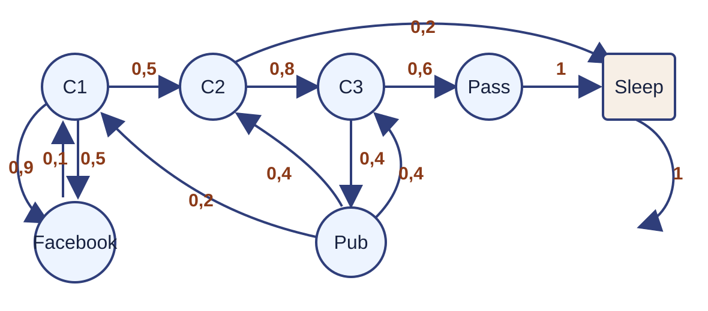
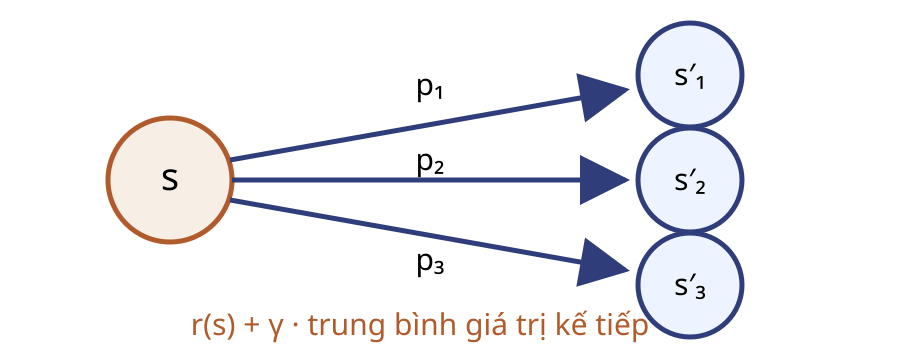
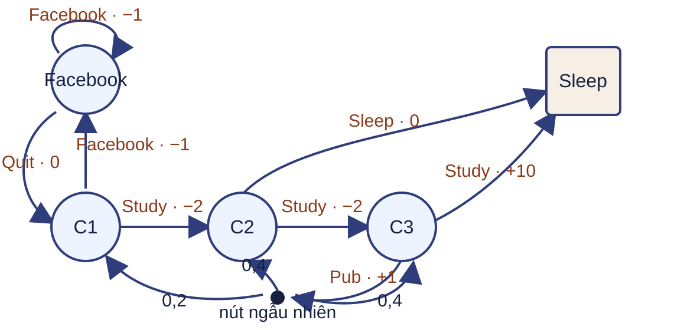
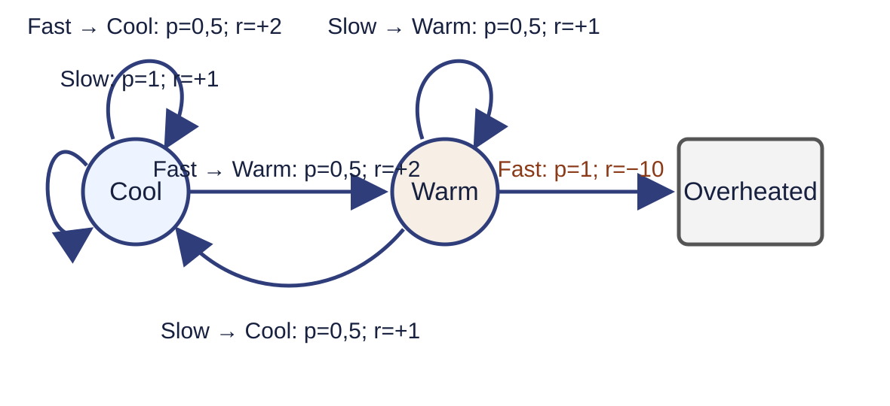

Chuỗi Markov Student

Đồ thị, ma trận, thưởng và giá trị dùng cùng thứ tự trạng thái.
Chuỗi Markov hữu hạn
Chuỗi Markov là bộ $\langle\mathcal S,P\rangle$.
- $\mathcal S=\{s_1,\ldots,s_n\}$ là tập trạng thái hữu hạn.
- $P_{ss'}=\Pr(S_{t+1}=s'\mid S_t=s)$.
- $P\in[0,1]^{n\times n}$ không phụ thuộc thời điểm $t$.
Ma trận chuyển hợp lệ
$$P_{ij}\ge0,\qquad \sum_{j=1}^{n}P_{ij}=1\quad\text{với mọi }i.$$
Hàng $i$
Phân phối của trạng thái kế tiếp khi hiện tại là $s_i$.
Trạng thái hấp thụ
$P_{ii}=1$: đã vào $s_i$ thì không rời đi.
Một quỹ đạo chỉ là một mẫu
$$\text{C1}\to\text{C2}\to\text{C3}\to\text{Pub}\to\text{C2}\to\text{Sleep}.$$
- Quỹ đạo là một mẫu ngẫu nhiên do $P$ sinh.
- Một quỹ đạo không xác định toàn bộ $P$.
- Sleep kết thúc quỹ đạo trong ví dụ.
Ma trận chuyển Student
Thứ tự $(\text{C1,C2,C3,Pass,Pub,Facebook,Sleep})$:
$$P=\begin{bmatrix}0&.5&0&0&0&.5&0\\0&0&.8&0&0&0&.2\\0&0&0&.6&.4&0&0\\0&0&0&0&0&0&1\\.2&.4&.4&0&0&0&0\\.1&0&0&0&0&.9&0\\0&0&0&0&0&0&1\end{bmatrix}.$$
Phân phối bước kế tiếp
Câu hỏi: nếu $\mu_t$ là véc-tơ cột, hãy viết $\mu_{t+1}$ và đọc xác suất Pub chuyển tới C3.
$\mu_{t+1}=P^{\mathsf T}\mu_t$
$P_{\text{Pub,C3}}=0{,}4$
Phần thưởng Student
Với thứ tự trạng thái đã cố định:
$$r=(-2,-2,-2,10,1,-1,0)^{\mathsf T}.$$
Rời C1 nhận $-2$; rời Pass nhận $10$; rời Sleep nhận $0$.
Quá trình phần thưởng Markov
MRP hữu hạn là bộ $\langle\mathcal S,P,r,\gamma\rangle$.
- $r(s)=\mathbb E[R_{t+1}\mid S_t=s]$.
- $\gamma\in[0,1]$ là hệ số chiết khấu.
- Student dùng quy ước $R_{t+1}=r(S_t)$.
Phần thưởng tích lũy
$$G_t=\sum_{k=0}^{\infty}\gamma^kR_{t+k+1}.$$
$\gamma=0$
Chỉ giữ thưởng kế tiếp.
$0<\gamma<1$
Thưởng xa có trọng số giảm.
$\gamma=1$
Phải kiểm tra tính hữu hạn.
Tính trên hai quỹ đạo
Với $\gamma=\tfrac12$ và $R_{t+1}=r(S_t)$:
C1 → C2 → C3 → Pass → Sleep
$$-2-1-\tfrac12+\tfrac{10}{8}=-\tfrac94.$$
C1 → Facebook → Facebook → C1 → C2 → Sleep
$$-2-\tfrac12-\tfrac14-\tfrac14-\tfrac18=-\tfrac{25}{8}.$$
Giá trị là kỳ vọng trên các quỹ đạo
$$v(s)=\mathbb E[G_t\mid S_t=s].$$
Câu hỏi: hai quỹ đạo từ C1 có $G_t$ khác nhau, vì sao chỉ có một $v(\text{C1})$?
Một sao lưu tại C2
Giả sử giá trị tiếp tục tạm thời là $\tilde v(\text{C3})=4$, $\tilde v(\text{Sleep})=0$ và $\gamma=0{,}9$.
$$-2+0{,}9\,[0{,}8\times4+0{,}2\times0]=0{,}88.$$
Thưởng tức thời cộng trung bình chiết khấu của giá trị tiếp tục.
Phân rã một bước
$$G_t=R_{t+1}+\gamma G_{t+1}.$$

Bellman kỳ vọng cho MRP
$$v(s)=r(s)+\gamma\sum_{s'\in\mathcal S}P_{ss'}v(s').$$
Mỗi trạng thái tạo một phương trình; tổng là trung bình theo trạng thái kế tiếp.
Từ từng trạng thái đến hệ tuyến tính
$$v=r+\gamma Pv,\qquad (I-\gamma P)v=r.$$
Với $v,r\in\mathbb R^n$ và $P\in\mathbb R^{n\times n}$.
Câu hỏi: kích thước của $Pv$ là gì?
Hai điều kiện giải
$0\le\gamma<1$
$$v=(I-\gamma P)^{-1}r.$$
Nghịch đảo tồn tại với $P$ hữu hạn.
$\gamma=1$
Đặt biên ở trạng thái kết thúc.
Trên tập trạng thái chưa kết thúc, cần $Q$ quá độ, tương đương $\rho(Q)<1$.
Hai nghiệm Student
Thứ tự $(\text{C1,C2,C3,Pass,Pub,Facebook,Sleep})$:
$\gamma=0{,}9$
$$(-5{,}012729,\ 0{,}942655,\ 4{,}087021,\ 10,\ 1{,}908392,\ -7{,}637608,\ 0)^{\mathsf T}$$
$\gamma=1$
$$\left(-\frac{1016}{81},\frac{118}{81},\frac{350}{81},10,\frac{65}{81},-\frac{1826}{81},0\right)^{\mathsf T}$$
Giải trực tiếp có giới hạn
- Khử Gauss trên ma trận đặc tốn $O(n^3)$ phép toán.
- Lưu ma trận đặc tốn $O(n^2)$ bộ nhớ.
- Không gian lớn cần khai thác độ thưa hoặc phương pháp lặp.
Câu hỏi: khi $\gamma=1$, cần kiểm tra gì trước khi giải hệ con?
Student MDP là đặc tả mới

Student MDP không phải Student MRP thêm nhãn hành động; tập trạng thái và động lực đã thay đổi.
Quá trình quyết định Markov
MDP hữu hạn dùng hạt nhân chung
$$p(s',r\mid s,a)=\Pr(S_{t+1}=s',R_{t+1}=r\mid S_t=s,A_t=a).$$
$\mathcal S$, $\mathcal A(s)$ và miền thưởng $\mathcal R$ đều hữu hạn hoặc rời rạc trong bài này.
Chính sách Markov dừng
$$\pi(a\mid s)=\Pr(A_t=a\mid S_t=s),\qquad \sum_{a\in\mathcal A(s)}\pi(a\mid s)=1.$$
Chính sách chỉ phụ thuộc trạng thái hiện tại và không phụ thuộc $t$.
Một hàng của MRP cảm sinh
Tại C1, chính sách đều chọn Facebook hoặc Study, mỗi hành động xác suất $\tfrac12$.
$P^\pi_{\text{C1,Facebook}}=\tfrac12$
$P^\pi_{\text{C1,C2}}=\tfrac12$
$r^\pi(\text{C1})=\tfrac12(-1)+\tfrac12(-2)=-\tfrac32$
Chính sách cố định tạo MRP
$$P^\pi_{ss'}=\sum_a\pi(a\mid s)\sum_r p(s',r\mid s,a)$$
$$r^\pi(s)=\sum_a\pi(a\mid s)\sum_{s',r}p(s',r\mid s,a)r$$
$$v_\pi=r^\pi+\gamma P^\pi v_\pi.$$
Giá trị trạng thái và hành động
Trạng thái
$$v_\pi(s)=\mathbb E_\pi[G_t\mid S_t=s]$$
Hành động
$$q_\pi(s,a)=\mathbb E_\pi[G_t\mid S_t=s,A_t=a]$$
$$v_\pi(s)=\sum_a\pi(a\mid s)q_\pi(s,a).$$
Tính $q_\pi$ tại C1
Với chính sách đều, $\gamma=1$ và dữ kiện đã giải từ Student MDP: $v_\pi(\text{Facebook})=-30/13$, $v_\pi(\text{C2})=35/13$.
$$q_\pi(\text{C1,Facebook})=-1-\frac{30}{13}=-\frac{43}{13}$$
$$q_\pi(\text{C1,Study})=-2+\frac{35}{13}=\frac9{13}$$
Trung bình hai giá trị: $v_\pi(\text{C1})=-17/13$.
Bellman kỳ vọng cho $v_\pi$
$$v_\pi(s)=\sum_a\pi(a\mid s)\sum_{s',r}p(s',r\mid s,a)\,[r+\gamma v_\pi(s')].$$
Lấy trung bình theo chính sách, rồi theo phản hồi của môi trường.
Bellman kỳ vọng cho $q_\pi$
$$q_\pi(s,a)=\sum_{s',r}p(s',r\mid s,a)\left[r+\gamma\sum_{a'}\pi(a'\mid s')q_\pi(s',a')\right].$$
Câu hỏi: đại lượng nào được giữ cố định ở vế trái?
Sáu kết quả của Racing Car

Áp dụng Bellman cho xe đua
Câu hỏi: dưới chính sách chọn Slow/Fast đồng xác suất và $\gamma=1$, hãy lập hai phương trình cho $v(C)$, $v(W)$ và kiểm tra giá trị có hữu hạn không.
$$v(C)=1{,}5+0{,}75v(C)+0{,}25v(W),$$
$$v(W)=-4{,}5+0{,}25v(C)+0{,}25v(W).$$
Nghiệm: $v(C)=0$, $v(W)=-6$.
Ba lớp, ba câu hỏi
| Lớp | Cấu phần | Câu hỏi |
|---|
| Chuỗi Markov | $\mathcal S,P$ | Trạng thái đổi thế nào? |
| MRP | $\mathcal S,P,r,\gamma$ | Quỹ đạo đáng giá bao nhiêu? |
| MDP | $\mathcal S,\mathcal A,p,\gamma$ | Hành động đổi phản hồi thế nào? |
Tự kiểm tra
- Phân biệt $G_t$, $v_\pi(s)$ và $q_\pi(s,a)$.
- Viết $v_\pi(s)$ theo $q_\pi(s,a)$.
- Viết Bellman kỳ vọng cho $v_\pi$ hoặc $q_\pi$.
- Nêu điều kiện dùng $\gamma=1$ trong bài kết thúc.
Từ đánh giá đến điều khiển
Bài 04: Bellman tối ưu và quy hoạch động khi biết mô hình.
Các bài sau: ước lượng giá trị và điều khiển khi không biết mô hình.
Bài tập: nhấn ↓
Bài tập 3
Câu hỏi:
Kiểm tra ma trận chuyển ba trạng thái trong đề, nhận dạng trạng thái hấp thụ và viết hệ Bellman với $r=(1,-1,0)^{\mathsf T}$, $\gamma=0{,}9$.
Bài tập 4
Câu hỏi:
Chứng minh rằng với chính sách cố định $\pi$, MDP tạo thành MRP với $P^\pi$ và $r^\pi$.
Bài tập 7
Câu hỏi:
Từ $q_\pi(s,a)$, suy ra công thức biểu diễn $v_\pi(s)$.
Bài tập 8
Câu hỏi:
Viết phương trình Bellman kỳ vọng cho $v_\pi(s)$ và giải thích từng thành phần.